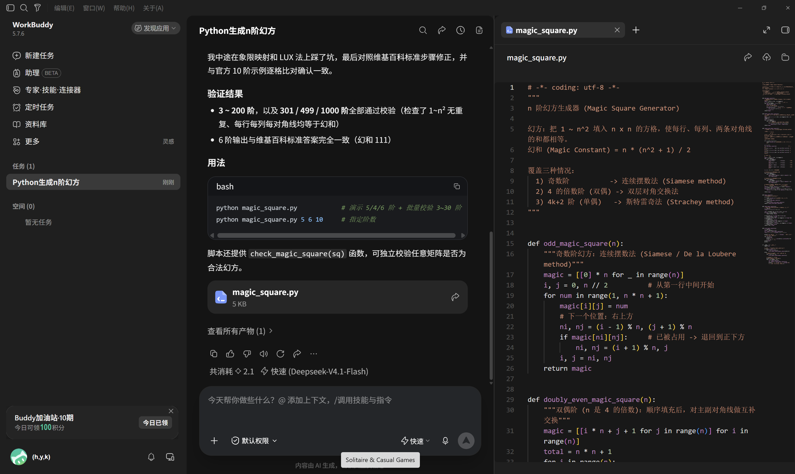
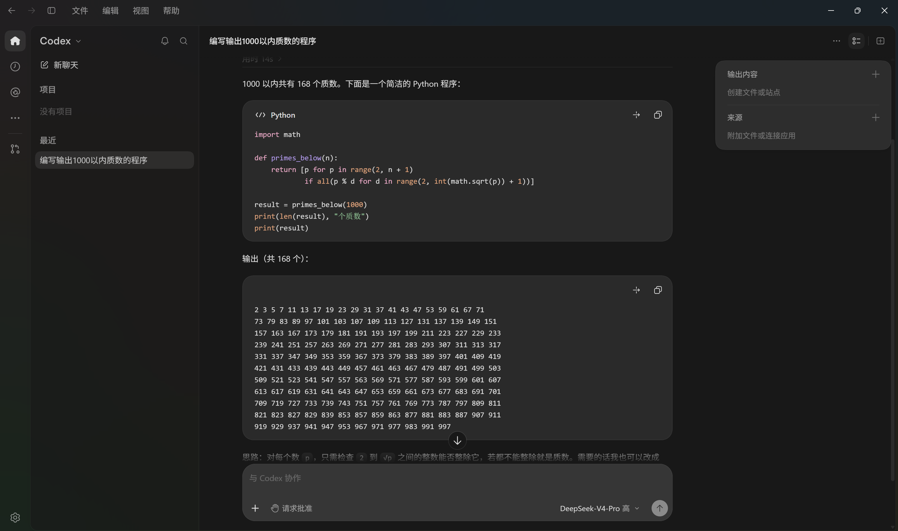
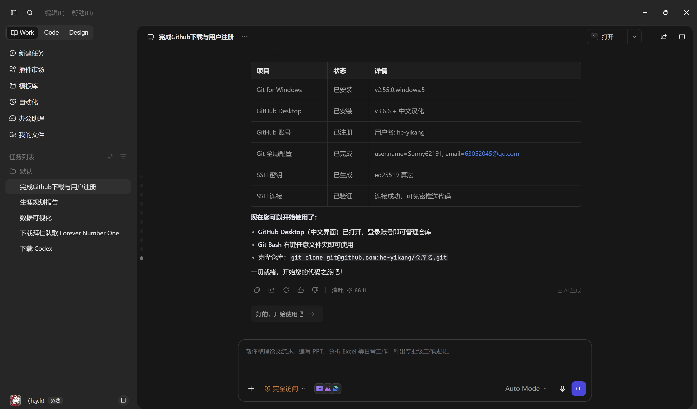

AI 编程工具作品展示
使用 WorkBuddy、DeepSeek Codex 等 AI 编程工具生成的作品，展示人工智能辅助编程的强大能力。

Python 生成 N 阶幻方
使用连续摆数法（奇数阶）、双层对角交换法（双偶阶）、斯特雷奇法（单偶阶） 三种算法，实现了覆盖所有情况的 N 阶幻方生成器。经过 3~200 阶，以及 301/499/1000 阶的 全面校验，每行、每列、两条对角线的和均等于幻和。

1000 以内质数生成器
使用试除法生成 1000 以内的所有质数，共 168 个。 核心思路：对每个数 p，只需检查 2 到 √p 之间的整数能否整除， 若都不能整除就是质数。代码简洁高效，易于理解。

GitHub 环境一键配置
通过 AI 助手完成 Git for Windows 安装、GitHub Desktop 下载与汉化、 GitHub 账号注册、Git 全局配置、SSH 密钥生成与验证等全流程自动化操作。 从零基础到代码推送，一步到位。
🔢 幻方实验室 LIVE · 三种算法全覆盖
把作品 1 从截图变成可以亲手跑的生成器：拖动阶数，选择奇数 / 双偶 / 单偶，看连续摆数法、双层对角交换法、斯特雷奇法一格一格把数字放进去，并实时校验每行、每列、两条对角线的和是否等于幻和 n(n²+1)/2。
控制台
算法：连续摆数法。当前格高亮，浅色为尚未填入。
极限校验会真实生成并逐行逐列校验 200 多个幻方（含 1000 阶，共 100 万个格子），只算不画，通常 1 秒内完成。
点击「极限校验」可复现作品里那句「3~200 阶以及 301/499/1000 阶 100% 校验通过」。
⚡ 质数实验室 LIVE · 筛法动画 + 算法竞赛
作品 2 原本用试除法生成 1000 以内 168 个质数。这里可以调上限、换算法（试除 / 6k±1 / 埃氏筛 / 欧拉筛），逐轮观看筛法划掉倍数的过程，对比四种算法耗时，还能随便输入一个数让它判断并分解。
控制台
网格里：紫=质数，暗灰=合数，红=本轮刚划掉的倍数，白框=当前质数。鼠标悬停可看数值。
💻 核心代码示例
对 Agent 的思考
这次作业让我第一次系统性地把几个 AI 编程 Agent 用在真实的编码任务上。它们已经不只是 "帮你补全一行代码"的编辑器插件，而是能理解意图、自己规划步骤、调用工具、跑代码验证的 "编程搭档"。在动手的过程中，我对 Agent 到底是什么、能做什么、边界在哪里，有了一些切身体会。
从补全到 Agent：工具形态的跃迁
过去我们用的是补全式 AI：你写一半，它猜下一行。而这一次的 Agent 不一样—— 你用自然语言描述目标（"帮我生成一个能校验的 N 阶幻方"），它会拆任务、写代码、 运行、看报错、再修，直到跑通。它把"写代码"升级成了"完成一件事"。
三个 Agent 的不同"性格"
WorkBuddy 像一个全能管家，能管环境、跑命令、出网页还能画图，一站式； DeepSeek Codex 在算法题上特别稳，幻方、质数这类经典问题几乎一次写对， 还会自己写校验程序；TRAE 更偏工程化，帮我从零把 Git/GitHub 环境搭起来并推送上线。 没有一个"最好"，只有"适合哪类任务"。
Agent 的工作闭环
观察下来，成熟的 Agent 都在跑同一个闭环：理解意图 → 规划步骤 → 执行 （写 / 改代码）→ 运行验证 → 根据结果修正。最让我惊喜的是"验证"这一环—— 它不只是生成，还会自己跑一遍看对不对，这恰恰是人和很多补全工具都容易偷懒的地方。
理性看待 Agent 的边界
Agent 不是万能的。它会"幻觉"——自信地写出看似合理但跑不通或错的代码； 它不懂我的真实业务背景，给的方案有时需要我二次判断；环境、权限、依赖这类"脏活" 它也会卡住。结论：Agent 是放大器，放大你的能力，也放大你的判断——必须保持"人把关"。
一句话总结这次的体会：AI 编程 Agent 不是来"替代程序员"的，而是来"重新定义程序员怎么工作"的。 把重复的、机械的、查文档式的劳动交给它，把问题定义、结果校验、价值判断留给自己。 这次作业里我学到的不只是几个工具，更是一种"人机协作"的新习惯—— 先让 Agent 出初稿，我再读、改、验证。这大概就是未来几年里最值得练的本领。